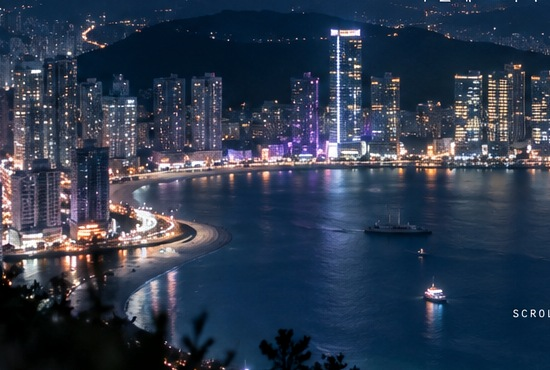
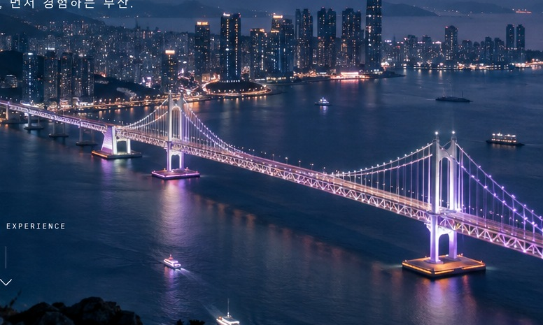

01GWANGALLI · NIGHT
↗


01 02
02
 03
03
둘러보고, 느끼고, 마음에 담아보세요.
사람이 서 있는 시점처럼 화면을 드래그해 둘러보세요. 정확히 한 바퀴(360°)를 돌아야 처음 장면으로 돌아옵니다. ＋를 누르면 장소 정보가 열립니다.
360° 이미지 출처: 부산광역시 관광정책과 · 부산관광아카이브 / 공공누리 제1유형(출처표시)
04 / ARRIVE
부산 XR 사전 체험 프로젝트 · 2026
360° XR 이미지 출처: 부산광역시 관광정책과·부산관광아카이브 / 공공누리 제1유형